С
Ө
З
+
ЖИ
«ҮЗДІК АВТОРЛЫҚ БАҒДАРЛАМА» · 2026
Тілдік дағдыларды жасанды интеллект көмегімен жетілдіру
1–4 сыныптар
«Қазақ тілі»
135 сағат
Молдабекова Г.Ж. · бастауыш сынып мұғалімі · №77 мектеп-гимназия, Астана · сайтты ашу ▶
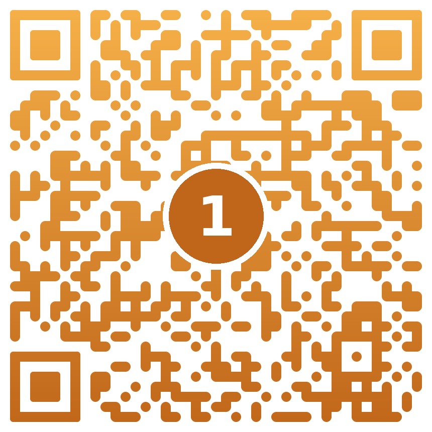
Сайтқа кіріңіз
?
!
Сыныптағы дауыс
«Короче, мен типа білемін, бірақ айта алмаймын…»
Бала ойлайды. Бірақ ойын жеткізуге сөзі жетпейді.
Сөз шеберлері · Молдабекова Г.Ж. · Ф. Оңғарсынова атындағы №77 мектеп-гимназия
2
Өзектілігі
01
Уақыт тестке кетеді — бала байланыстырып жазуға аз жаттығады
02
Кітап аз оқылады — ойды жеткізуге сөз жетпейді
03
«короче», «типа», «ок» — бөгде сөздер сөйлеуді ластайды
Шешім: мұғалім 25 баланы бір мезгілде ести алмайды — ЖИ жедел кері байланыс береді.
Сөз шеберлері · Молдабекова Г.Ж. · Ф. Оңғарсынова атындағы №77 мектеп-гимназия
3
Мақсаты мен міндеттері
МАҚСАТЫ
Оқушылардың тыңдалым, оқылым, айтылым, жазылым дағдыларын ЖИ мен интерактивті орта арқылы кешенді дамыту, сөздік қорын байыту, таза сөйлеу мәдениетін қалыптастыру
тілдік ұғымдарды көрнекі модель мен ЖИ арқылы саналы меңгерту
4 дағдыны, сыни және шығармашылық ойлауды дамыту
ана тіліне құрмет, таза сөйлеу мәдениеті
ЖИ-ді қауіпсіз, әдепті, мақсатты қолдану
мұғалімге дайын сабақ үлгісі мен сайт ұсыну
Сөз шеберлері · Молдабекова Г.Ж. · Ф. Оңғарсынова атындағы №77 мектеп-гимназия
4
Мега идея
4 дағды
+
ЖИ
+
оқу мақсаты
=
Сөз шебері
ЖИ —
көмекші
Мұғалім —
бағыттаушы
Оқушы —
автор
Сөз шеберлері · Молдабекова Г.Ж. · Ф. Оңғарсынова атындағы №77 мектеп-гимназия
5
Жаңашылдығы
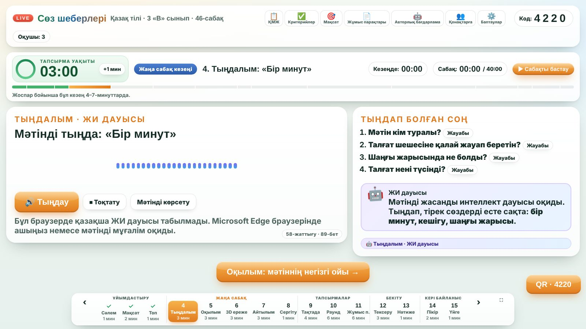
Тыңдалым
Мәтінді табиғи дауыспен оқиды
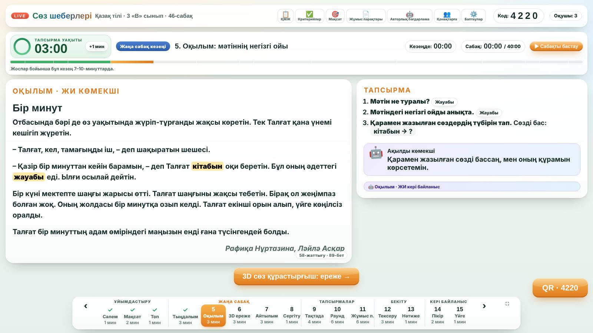
Оқылым
Сөз құрамын түспен ашады
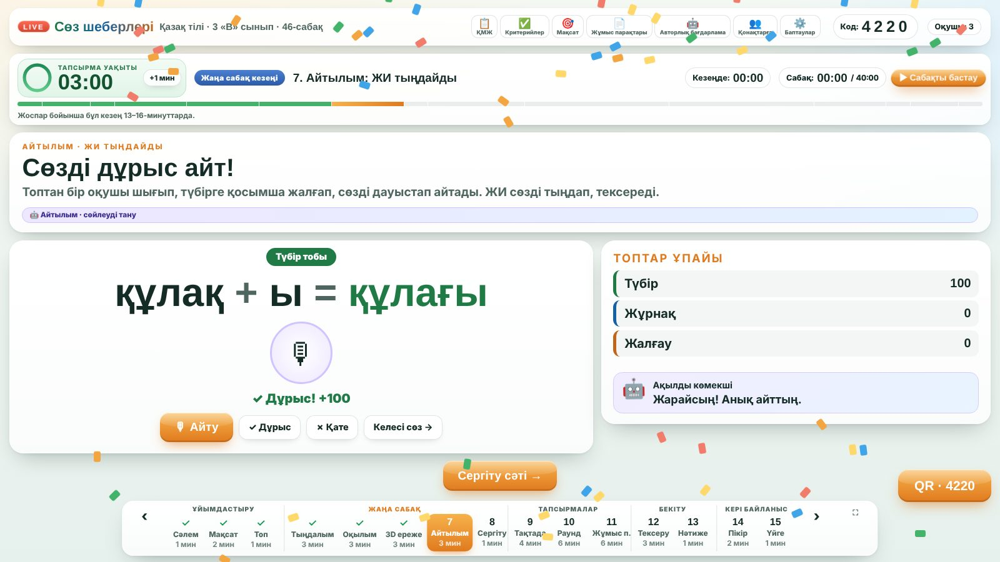
Айтылым
Айтылған сөзді тексереді
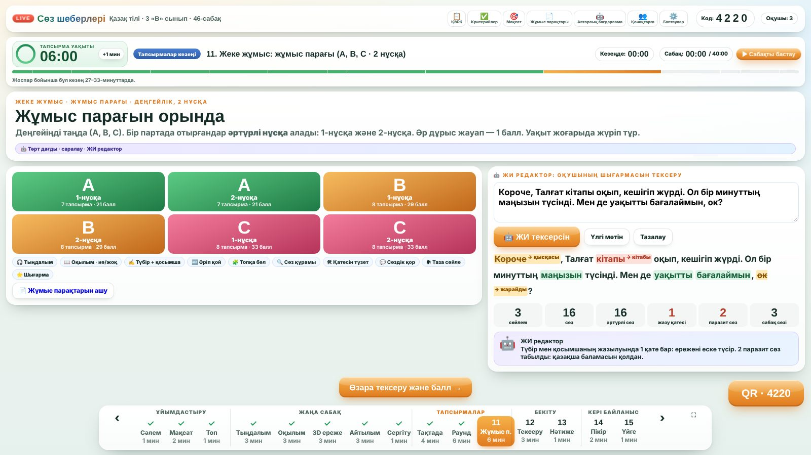
Жазылым
Қатені, бөгде сөзді табады
Сөз шеберлері · Молдабекова Г.Ж. · Ф. Оңғарсынова атындағы №77 мектеп-гимназия
6
Ерекшеліктері
С
Саралау
Ө
Өзара бағалау
З
Зерттеу
Ш
Шығармашылық
Е
Ереже — 3D
Б
Бейнелілік
Е
Е-портфолио
Р
Рефлексия
І
Инклюзия
Телефонсыз да жұмыс істейді: топтар жауабын интерактивті тақтадағы өз панелінен береді.
Сөз шеберлері · Молдабекова Г.Ж. · Ф. Оңғарсынова атындағы №77 мектеп-гимназия
7
Нормативтік негізі және құрылымы
✓ «Білім туралы» ҚР Заңы
✓ «Педагог мәртебесі туралы» ҚР Заңы
✓ МЖМБС — №348 бұйрық (2022)
✓ Үлгілік оқу бағдарламасы — №399 (2022)
✓ ҚМЖ нысаны — №130 бұйрық
✓ Критериалды бағалау — №125 бұйрық
✓ ЮНЕСКО: білім берудегі ЖИ (2023)
1
Түсіндірме жазба
2
Нормативтік бөлім
3
Оқу-тақырыптық жоспар
4
Ақпараттық-мазмұндық бөлім
5
Мұғалімдерге: әдістеме
6
Оқушыларға арналған бөлім
7
Бағалау және мониторинг
8
Апробация, әдебиеттер
Сөз шеберлері · Молдабекова Г.Ж. · Ф. Оңғарсынова атындағы №77 мектеп-гимназия
8
Оқу-тақырыптық жоспар
1
1-сынып · 33 сағат
Дыбыс → буын → сөз
2
2-сынып · 34 сағат
Сөз мағынасы → сөйлем → мәтін
3
3-сынып · 34 сағат
Сөз құрамы → сөз таптары
4
4-сынып · 34 сағат
Жалғаулар → сөйлем → шығарма
135
сағат барлығы
71%
практика: 96 сағ. · теория: 39 сағ.
Сөз шеберлері · Молдабекова Г.Ж. · Ф. Оңғарсынова атындағы №77 мектеп-гимназия
9
Педагогикалық негізділігі
Жақын даму аймағы: ЖИ — уақытша «тірек»
Жедел кері байланыс нәтижені арттырады
Сөз + бейне: 3D модель, дыбыс
Саралау: А, В, С деңгейлер
«Тіл — құрал»: дыбыс → сөз → сөйлем
ЖИ этикасы: жеке дерек жиналмайды
Сөз шеберлері · Молдабекова Г.Ж. · Ф. Оңғарсынова атындағы №77 мектеп-гимназия
10
Практикалық өнім
Басты бет
makpalkubantova-arch.github.io/sozsheberleri · орнатусыз · интерактивті тақтаға толық сияды
Сөз шеберлері · Молдабекова Г.Ж. · Ф. Оңғарсынова атындағы №77 мектеп-гимназия
11
Тірі демо
Сабақ моделі
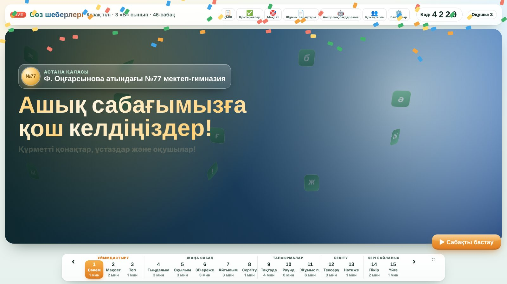
Таймер: сабақ басталды
Тыңдалым
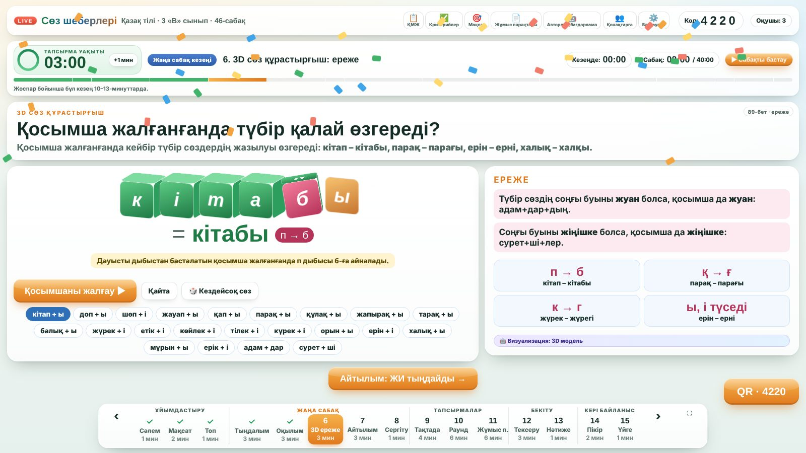
3D ереже
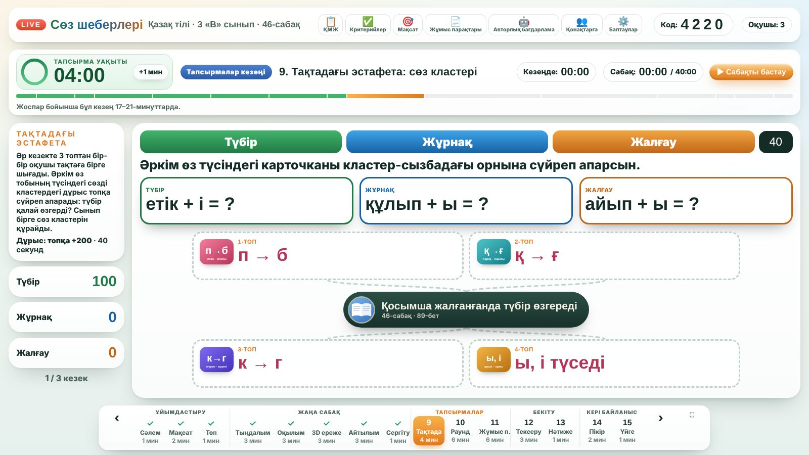
Тақтада эстафета
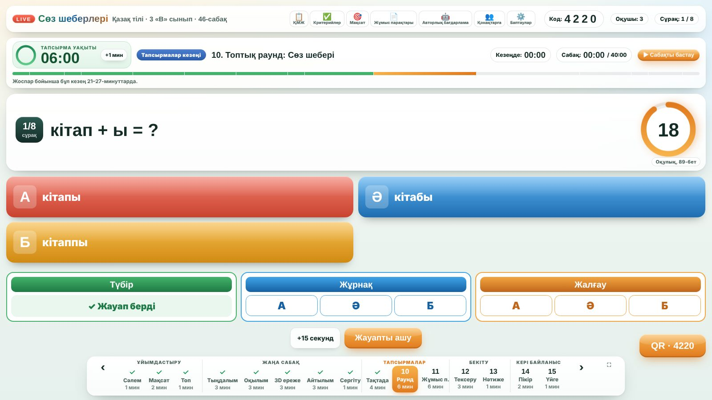
Топтық раунд
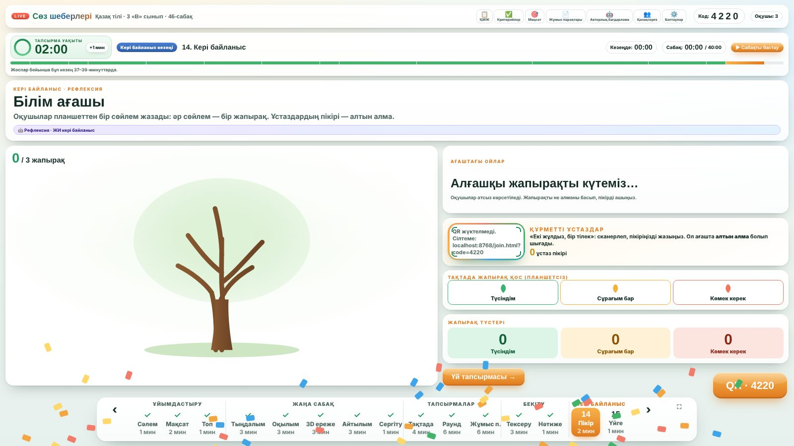
«Білім ағашы»
Сөз шеберлері · Молдабекова Г.Ж. · Ф. Оңғарсынова атындағы №77 мектеп-гимназия
12
Шығармашылық
кітап + ы =
кітабы
тарақ + ы =
тарағы
Куб айналып, дыбыс өзгереді. Бала ережені жаттамайды — көреді.
Сөз шеберлері · Молдабекова Г.Ж. · Ф. Оңғарсынова атындағы №77 мектеп-гимназия
13
Саралау
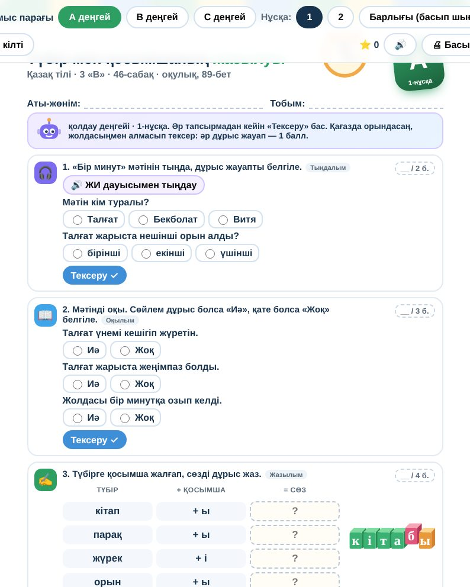
А
Тірек: сәйкестендіру, бос орын
21 балл
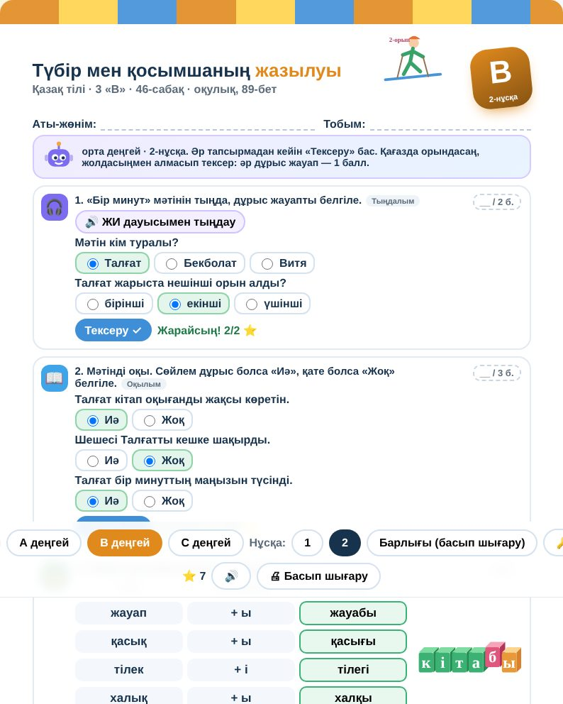
В
Талдау, топтастыру, «Таза сөйле»
29 балл
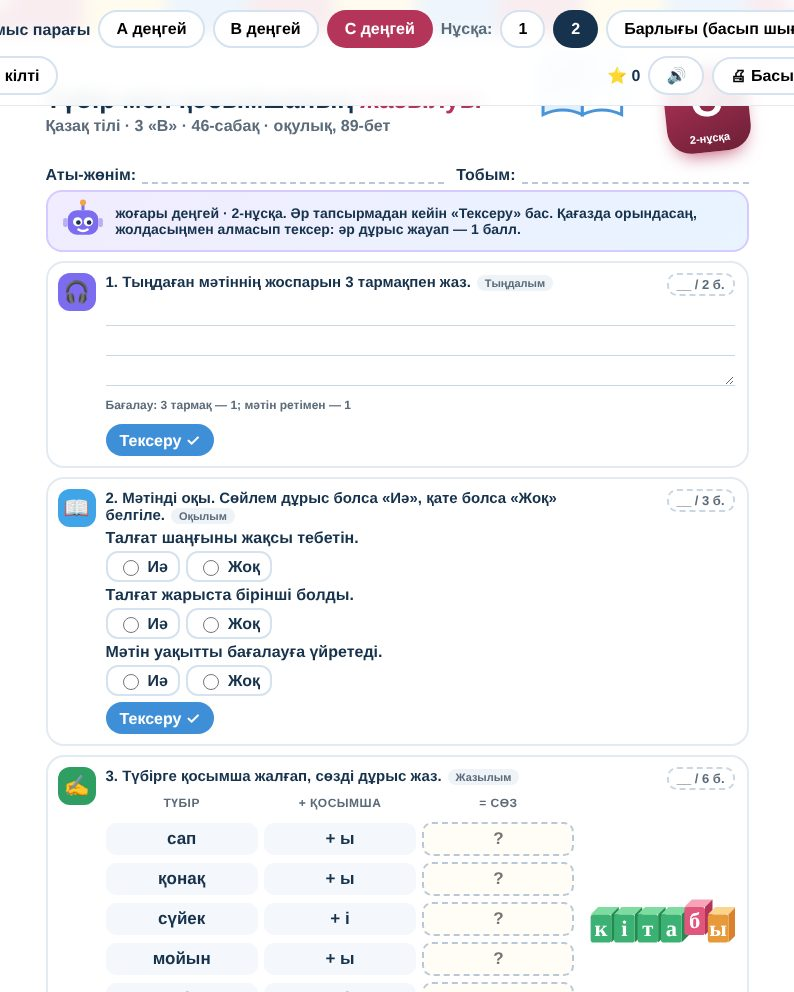
С
Қате түзету, шығарма, ЖИ-ді тексеру
33 балл
1 балл = 20 топ ұпайы · парақ алмасып, тақтадағы кілтпен тексереміз
Сөз шеберлері · Молдабекова Г.Ж. · Ф. Оңғарсынова атындағы №77 мектеп-гимназия
14
Бағалау
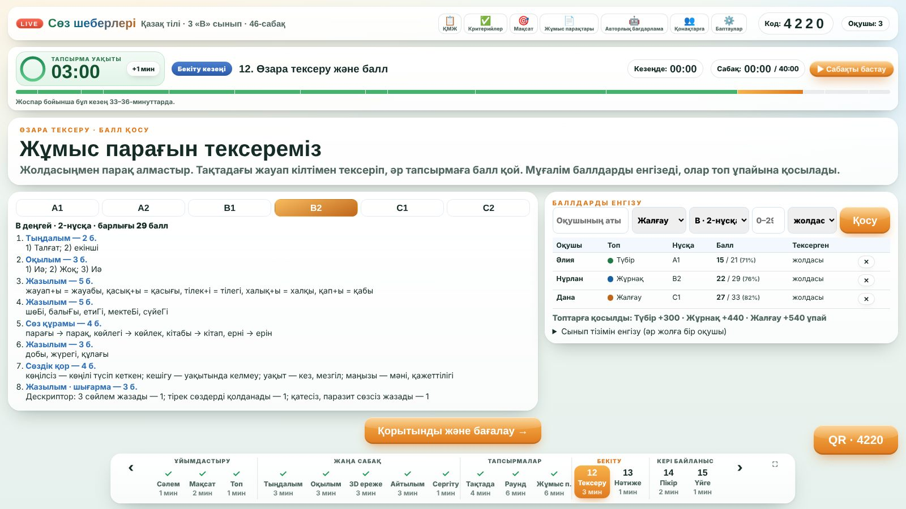
Өзара тексеру → балл тақтаға
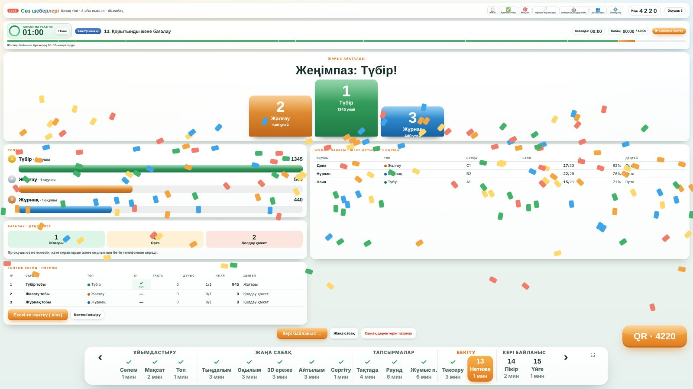
Жеңімпаз топ → Excel портфолио
Сөз шеберлері · Молдабекова Г.Ж. · Ф. Оңғарсынова атындағы №77 мектеп-гимназия
15
Күтілетін нәтижелер
Тыңдалым
мәтіннің мазмұнын түсінеді, сұраққа жауап береді
Оқылым
негізгі ойды табады, сөз құрамын талдайды
Айтылым
анық, таза сөйлейді, бөгде сөз қолданбайды
Жазылым
ережені сақтап, 7–8 сөйлемді шығарма жазады
Сөздік қор
әр тоқсанда 30+ жаңа сөзді белсенді қолданады
ЖИ мәдениеті
ЖИ жауабын сыни бағалайды
Сөз шеберлері · Молдабекова Г.Ж. · Ф. Оңғарсынова атындағы №77 мектеп-гимназия
16
Апробация · 3 «В» сынып
Ережені қатесіз жазу
52% →
87%
Тыңдалым мен оқылым
68% →
89%
Оқу уәждемесі
70% →
95%
Паразит сөз (5 мин.)
50 →
10
Мониторинг 3 кезеңде: бастапқы · аралық · қорытынды
Сөз шеберлері · Молдабекова Г.Ж. · Ф. Оңғарсынова атындағы №77 мектеп-гимназия
17
Даму жолы
1
2026
Бағдарлама жазылды, сайт пен парақтар әзірленді
2
Қараша 2026
«Үздік авторлық бағдарлама» конкурсы
3
Конкурстан кейін
Астана қаласының оқу-әдістемелік орталығы — сараптама
4
Жоспарда
Ы. Алтынсарин атындағы ҰБА — республикалық сараптама
Сөз шеберлері · Молдабекова Г.Ж. · Ф. Оңғарсынова атындағы №77 мектеп-гимназия
18
Р
А
Қ
М
Е
Т
Технология тілді үйретпейді.
Ол мұғалімге әр баланы естуге көмектеседі.
Назарларыңызға рақмет!
Пікіріңізді жазыңыз